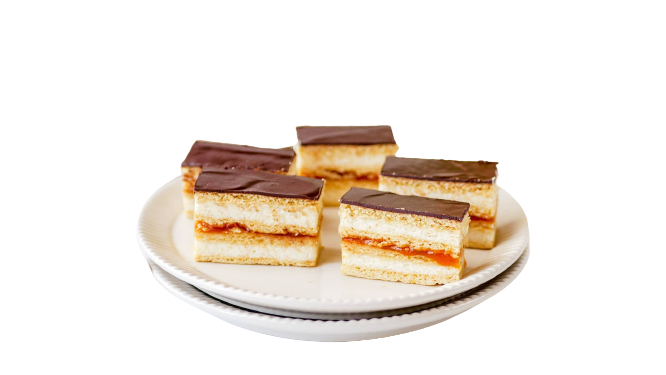

Hozzávalók
- 500 g finomliszt
- 150 g kristálycukor
- 1 db egész tojás
- 140 g méz
- 70 g sertés zsír (lehet helyettesíteni margarinnal)
- 1 teáskanál szódabikarbóna (ez kb. 12 g)
- 6 cl tej
- csipet só
- 1 liter tej
- 150 g búzadara (más néven gríz)
- 250 g vaj (esetleg sütőmargarin)
- 200 g porcukor
- 10 g vaníliás cukor
- 350 g sárgabarack lekvár
- csipet só
- 160 g étcsokoládé pasztilla vagy táblás étcsokoládé
- 2-3 cl olaj
- 2-3 dl lekvár (sárgabarackot ajánlunk)
A Mézes lapokhoz:
A Grízes töltelékhez:
A csokoládé borításhoz:
Elkészítés
- A lisztet, a kristálycukrot, a szódabikarbónát és a csipet sót összekeverjük szárazon
- Hozzáadjuk a sertés zsírt / margarint, és elkeverjük
- Ezután beleöntjük a tejet, a mézet és a tojást (érdemes külön pohárba feltörni hogy megbizonyosodjunk róla, jó-e még.) és készre gyúrjuk a tésztát
- Ha nagyon ragad a kezünkhöz, akkor egy pár percre betesszük a hűtőbe (bár mivel ez egy mézes tészta mindíg ragadni fog, épp csak annyira kell összeállnia hogy ki lehessen nyújtani)
- 4 egyenlő darabra osztjuk és a tepsink méretéhez megfelelőre nyújtjuk
- laponként külön-külön kisütjük 180 C fokos sütőben alsó felső módozatban 7 perc alatt, de érdemes mellette maradni nehogy odaégjen (ha eltörik akkor alacsonyabb hőmérsékleten kell sütni a többit, ha használhatatlannak ítéljük, megszárítva durvára aprítva használható édes morzsának dió vagy mogyoró helyett)
- A tejet egy edényben felmelegítjük kb 50-60C ra, egy csipet sót hozzáadunk. (Előtte érdemes az edényt egy kis hidegvízzel kiöblíteni, ez segít hogy ne édjen oda a tejbegríz)
- Lassan öntve gyorsan kavarva hozzáadjuk a grízet, addíg kevergetjük, és főzzük amíg krémes nem lesz.
- A vajat, porcukrot és a vaníliáscukrot egy másik edényben krémesre keverjük. (Ehez bár lehet gépi habverőt használni, érdemes megkezdeni egy kicsit egy kanállal, mert különben a gép szétteríti a porcukrot az egész helyiségben)
- Végül belekeverjük a vajas krémet a tejbegrízbe
- A következő rétegrendben ajánlott elkészíteni:
(teteje) - csokoládé borítás
- Mézes lap
- A fele a grízes tölteléknek
- Mézes lap
- Lekvár
- Mézes lap
- A másik fele a grízes tölteléknek
- Mézes lap (alja)
- Ízlés szerint a csokoládé borításba díszítés képpen mogyorót, csokoládészirmokat, diót vagy akár francia drazsét is szórhatunk rá.
A Mézes lapok
(Bár van olyan bolt ahol meg lehet venni, javasolt a tökéletes ízekért magunknak elkészíteni.)
A töltelék
A sütemény összeállítása
Jó étvágyat!
